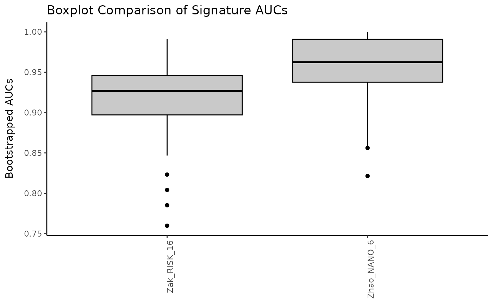

Create a comparison plot of boxplots for bootstrapped AUC values.
Source:R/bootstrap.R
compareBoxplots.RdPresent the results of AUC bootstrapping for a collection of scored signatures via boxplots.
Usage
compareBoxplots(
SE_scored,
annotationColName,
signatureColNames,
num.boot = 100,
name = "Boxplot Comparison of Signature AUCs",
pb.show = TRUE,
abline.col = "red",
fill.col = "gray79",
outline.col = "black",
rotateLabels = FALSE,
violinPlot = FALSE
)Arguments
- SE_scored
a
SummarizedExperimentobject with genes as the row features and signature scores in thecolData. There should also be a column of annotation data. Required.- annotationColName
a character string giving the column name in
colDatathat contains the annotation data. Required.- signatureColNames
a vector of column names in the
colDatathat contain the signature score data. Required.- num.boot
an integer indicating the number of times to bootstrap the data.
- name
a character string giving the overall title for the plot. The default is
"Boxplot Comparison of Signature AUCs".- pb.show
logical for whether to show a progress bar while running code. Default is
TRUE.- abline.col
the color to be used for the dotted line at AUC = 0.5 (the chance line). The default is
"red".- fill.col
the color to be used to fill the boxplots. The default is
"white".- outline.col
the color to be used for the boxplot outlines. The default is
"black".- rotateLabels
If
TRUE, rotate labels. Default isFALSE.- violinPlot
logical. Setting
violinPlot = TRUEcreates violin plots in place of boxplots. The mean and +/- 1 standard deviation are added to the violin plot interior for each signature. The default isFALSE.
Examples
# Run signature profiling
choose_sigs <- TBsignatures[c("Zak_RISK_16", "Zhao_NANO_6")]
prof_indian <- runTBsigProfiler(TB_indian[seq_len(25), ],
useAssay = "logcounts",
algorithm = "ssGSEA",
signatures = choose_sigs,
parallel.sz = 1)
#> Parameter update_genes is TRUE. Gene names will be updated.
#> Running ssGSEA
#> Estimating ssGSEA scores for 2 gene sets.
#> [1] "Calculating ranks..."
#> [1] "Calculating absolute values from ranks..."
#>
|
| | 0%
|
|== | 2%
|
|=== | 5%
|
|===== | 7%
|
|====== | 9%
|
|======== | 11%
|
|========== | 14%
|
|=========== | 16%
|
|============= | 18%
|
|============== | 20%
|
|================ | 23%
|
|================== | 25%
|
|=================== | 27%
|
|===================== | 30%
|
|====================== | 32%
|
|======================== | 34%
|
|========================= | 36%
|
|=========================== | 39%
|
|============================= | 41%
|
|============================== | 43%
|
|================================ | 45%
|
|================================= | 48%
|
|=================================== | 50%
|
|===================================== | 52%
|
|====================================== | 55%
|
|======================================== | 57%
|
|========================================= | 59%
|
|=========================================== | 61%
|
|============================================= | 64%
|
|============================================== | 66%
|
|================================================ | 68%
|
|================================================= | 70%
|
|=================================================== | 73%
|
|==================================================== | 75%
|
|====================================================== | 77%
|
|======================================================== | 80%
|
|========================================================= | 82%
|
|=========================================================== | 84%
|
|============================================================ | 86%
|
|============================================================== | 89%
|
|================================================================ | 91%
|
|================================================================= | 93%
|
|=================================================================== | 95%
|
|==================================================================== | 98%
|
|======================================================================| 100%
#>
#> [1] "Normalizing..."
# Create boxplots
compareBoxplots(prof_indian, annotationColName = "label",
signatureColNames = names(choose_sigs), rotateLabels = TRUE)
#>
|
| | 0%
|
|=================================== | 50%
|
|======================================================================| 100%
